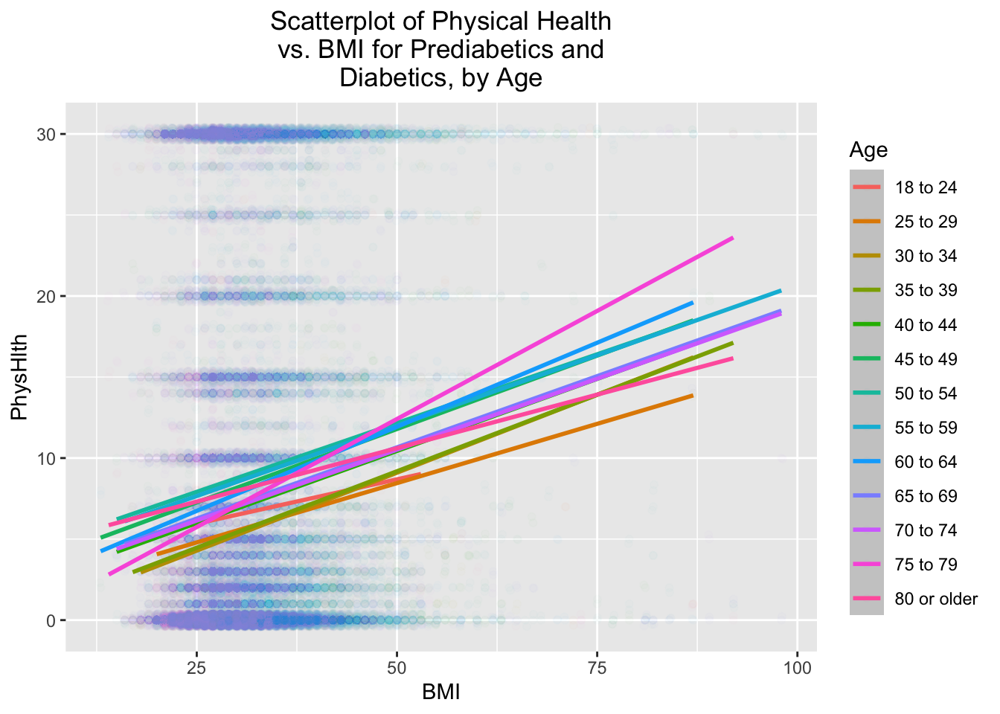
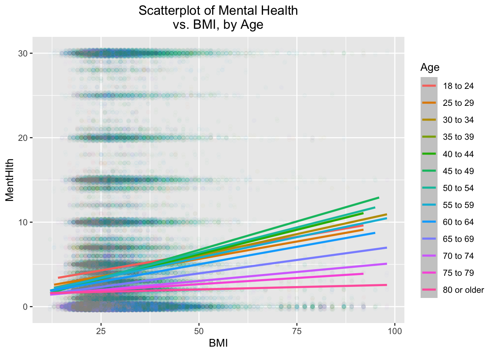

We will explore the Centers for Disease Control and Prevention (CDC) Behavioral Risk Factor Surveillance System (BRFSS) data set of diabetes binary health indicators from 2015. Two questions that we would like to address in this exploratory data analysis:
Which factors are most predictive of diabetes risk?
Can we use a subset of the risk factors to accurately predict whether an individual has diabetes?
Read In The Data
We will first read in the data:
library(ascii)library(tidyverse)
── Attaching core tidyverse packages ──────────────────────── tidyverse 2.0.0 ──
✔ dplyr 1.1.4 ✔ readr 2.1.5
✔ forcats 1.0.0 ✔ stringr 1.5.1
✔ ggplot2 3.5.1 ✔ tibble 3.2.1
✔ lubridate 1.9.3 ✔ tidyr 1.3.1
✔ purrr 1.0.2
── Conflicts ────────────────────────────────────────── tidyverse_conflicts() ──
✖ tidyr::expand() masks ascii::expand()
✖ dplyr::filter() masks stats::filter()
✖ dplyr::lag() masks stats::lag()
ℹ Use the conflicted package (<http://conflicted.r-lib.org/>) to force all conflicts to become errors
Attaching package: 'vroom'
The following object is masked from 'package:yardstick':
spec
The following object is masked from 'package:scales':
col_factor
The following objects are masked from 'package:readr':
as.col_spec, col_character, col_date, col_datetime, col_double,
col_factor, col_guess, col_integer, col_logical, col_number,
col_skip, col_time, cols, cols_condense, cols_only, date_names,
date_names_lang, date_names_langs, default_locale, fwf_cols,
fwf_empty, fwf_positions, fwf_widths, locale, output_column,
problems, spec
Rows: 253680 Columns: 22
── Column specification ────────────────────────────────────────────────────────
Delimiter: ","
dbl (22): Diabetes_binary, HighBP, HighChol, CholCheck, BMI, Smoker, Stroke,...
ℹ Use `spec()` to retrieve the full column specification for this data.
ℹ Specify the column types or set `show_col_types = FALSE` to quiet this message.
We have 22 variables: 1 response (Diabetes_binary) and 21 possible predictors. From the 21, we will choose 6: Age, Sex, Income, Stroke, Heart Disease or Attack, and Heavy Alcohol Consumption. We are focusing on these variables as predictors because they are related both to lifestyle and to health.
Other variables, such as Age or Body Mass Index (BMI), are interesting but may be less helpful. Diabetes comes in different forms - at least Type 1 and Type 2 but possibly more - and we expect there to be fewer instances of diabetes (especially Type 2) among the young.
The BMI is dubious as a predictor because two people may share the same BMI but have very different body compositions; these differences can manifest as health problems for one person but not another. Since we lack family history, height, or weight of the respondents in this dataset, we can’t easily make an assessment. Further, since many of the variables are categorical, we cannot find correlations between them and any of the numeric variables.
Determine The Rate of Missing Values
We want to check for missing values, since these can impact our results.
The sums are 0 for each column, so there is no missing data. Otherwise, would might need to exclude observations or come up with a reasonable scheme for handling the missing observations.
We have a number of categorical variables that would be good to convert to factors.
data <- data |>mutate(Diabetes_binary=factor(Diabetes_binary,levels=c("0","1"),labels=c("no diabetes","prediabetes or diabetes")),HighBP=factor(HighBP,levels=c("0","1"),labels=c("no high BP","high BP")),HighChol=factor(HighChol,levels=c("0","1"),labels=c("no high cholesterol","high cholesterol")),CholCheck=factor(CholCheck,levels=c("0","1"),labels=c("no cholesterol check in 5 years","yes cholesterol check in 5 years")),#BMI=factor(BMI),Smoker=factor(Smoker,levels=c("0","1"),labels=c("no","yes")),Stroke=factor(Stroke,levels=c("0","1"),labels=c("no","yes")),HeartDiseaseorAttack=factor(HeartDiseaseorAttack,levels=c("0","1"),labels=c("no","yes")),PhysActivity=factor(PhysActivity,levels=c("0","1"),labels=c("no","yes")),Fruits=factor(Fruits,levels=c("0","1"),labels=c("no","yes")),Veggies=factor(Veggies,levels=c("0","1"),labels=c("no","yes")),HvyAlcoholConsump=factor(HvyAlcoholConsump,levels=c("0","1"),labels=c("no","yes")),AnyHealthcare=factor(AnyHealthcare,levels=c("0","1"),labels=c("no","yes")),NoDocbcCost=factor(NoDocbcCost,levels=c("0","1"),labels=c("no","yes")),GenHlth=factor(GenHlth,levels=c("1","2","3","4","5"),labels=c("excellent","very good","good","fair","poor")),#MentHlth=#factor(MentHlth),#PhysHlth=#factor(PhysHlth),DiffWalk=factor(DiffWalk,levels=c("0","1"),labels=c("no difficulty walking","yes difficulty walking")),Sex=factor(Sex,levels=c("0","1"),labels=c("female","male")),Age=factor(Age,levels=c("1","2","3","4","5","6","7","8","9","10","11","12","13"),labels=c("18 to 24","25 to 29","30 to 34","35 to 39","40 to 44","45 to 49","50 to 54","55 to 59","60 to 64","65 to 69","70 to 74","75 to 79","80 or older")),Education=factor(Education,levels=c("1","2","3","4","5","6"),labels=c("Never attended school or only kindergarten","Grades 1 through 8 (Elementary)","Grades 9 through 11 (Some high school)","Grade 12 or GED (High school graduate)","College 1 year to 3 years (Some college or technical school)","College 4 years or more (College graduate)")),Income=factor(Income,levels=c("1","2","3","4","5","6","7","8"),labels=c("Less than $10,000","$10,000 to less than $15,000","$15,000 to less than $20,000","$20,000 to less than $25,000","$25,000 to less than $35,000","$35,000 to less than $50,000","$50,000 to less than $75,000","$75,000 or more")) )
Basic Data Validation
Summarize each column to see if there are any unusual values.
summary(data)
Diabetes_binary HighBP
no diabetes :218334 no high BP:144851
prediabetes or diabetes: 35346 high BP :108829
HighChol CholCheck
no high cholesterol:146089 no cholesterol check in 5 years : 9470
high cholesterol :107591 yes cholesterol check in 5 years:244210
BMI Smoker Stroke HeartDiseaseorAttack PhysActivity
Min. :12.00 no :141257 no :243388 no :229787 no : 61760
1st Qu.:24.00 yes:112423 yes: 10292 yes: 23893 yes:191920
Median :27.00
Mean :28.38
3rd Qu.:31.00
Max. :98.00
Fruits Veggies HvyAlcoholConsump AnyHealthcare NoDocbcCost
no : 92782 no : 47839 no :239424 no : 12417 no :232326
yes:160898 yes:205841 yes: 14256 yes:241263 yes: 21354
GenHlth MentHlth PhysHlth
excellent:45299 Min. : 0.000 Min. : 0.000
very good:89084 1st Qu.: 0.000 1st Qu.: 0.000
good :75646 Median : 0.000 Median : 0.000
fair :31570 Mean : 3.185 Mean : 4.242
poor :12081 3rd Qu.: 2.000 3rd Qu.: 3.000
Max. :30.000 Max. :30.000
DiffWalk Sex Age
no difficulty walking :211005 female:141974 60 to 64:33244
yes difficulty walking: 42675 male :111706 65 to 69:32194
55 to 59:30832
50 to 54:26314
70 to 74:23533
45 to 49:19819
(Other) :87744
Education
Never attended school or only kindergarten : 174
Grades 1 through 8 (Elementary) : 4043
Grades 9 through 11 (Some high school) : 9478
Grade 12 or GED (High school graduate) : 62750
College 1 year to 3 years (Some college or technical school): 69910
College 4 years or more (College graduate) :107325
Income
$75,000 or more :90385
$50,000 to less than $75,000:43219
$35,000 to less than $50,000:36470
$25,000 to less than $35,000:25883
$20,000 to less than $25,000:20135
$15,000 to less than $20,000:15994
(Other) :21594
The categorical variables are summarized into (vertical) one-way contingency tables in descending order of number of respondents. Note that for more than six categories, the summaries lump values into “(Other).” We obtain measures of center and spread for the numerical variables. Some of the BMI values are extremely low or high; we will examine these when we perform a numerical analysis.
Investigate Distributions
Contingency Tables for Predictors and Responses
We will examine one-, two-, and three-way contingency tables for the predictors and response. We will also include Age for some assessments, since it may provide insight about certain categories.
One-Way Contingency Tables
For the one-way contingency table related to the response:
table(data$Diabetes_binary,dnn="Diabetes_binary")
Diabetes_binary
no diabetes prediabetes or diabetes
218334 35346
For the predictors:
table(data$Age,dnn="Age")
Age
18 to 24 25 to 29 30 to 34 35 to 39 40 to 44 45 to 49
5700 7598 11123 13823 16157 19819
50 to 54 55 to 59 60 to 64 65 to 69 70 to 74 75 to 79
26314 30832 33244 32194 23533 15980
80 or older
17363
table(data$Sex,dnn="Sex")
Sex
female male
141974 111706
table(data$Income,dnn="Income")
Income
Less than $10,000 $10,000 to less than $15,000
9811 11783
$15,000 to less than $20,000 $20,000 to less than $25,000
15994 20135
$25,000 to less than $35,000 $35,000 to less than $50,000
25883 36470
$50,000 to less than $75,000 $75,000 or more
43219 90385
table(data$Stroke,dnn="Stroke")
Stroke
no yes
243388 10292
table(data$HeartDiseaseorAttack,dnn="Heart Disease or Attack")
Next, we consider two-way contingency tables between the predictors and the response. We will use the ascii package so that we can make the tables look less muddled and more precise regarding categories.
For respondents between 18 to 24, more males than females responded to the survey. For the other age ranges, more females than males responded. Also, above age 74, there are significantly more female than male respondents; it is well-known that the average lifespan of males is less than that of females. So, it is likely that there are fewer males, compared with females, to respond to the survey.
HeartDiseaseorAttack vs. Stroke:
print(ascii(table(data$Stroke,data$HeartDiseaseorAttack,dnn=c("Stroke","Heart Disease or Attack"))),type="rest")
We see that few of the respondents are both heavy drinkers and have been assessed to have a stroke. Also, we note that the largest numer of respondents report neither drinking heavily nor having been assessed to have had a stroke.
HvyAlcoholConsump vs. HeartAttackorDisease:
print(ascii(table(data$HeartDiseaseorAttack,data$HvyAlcoholConsump,dnn=c("Heart Disease or Attack","Heavy Alcohol Consumption"))),type="rest")
We see that few of the respondents are both heavy drinkers and have heart disease or have had a heart attack. Also, we note that the largest numer of respondents report neither drinking heavily nor having been assessed to have heart disease or a heart attack. This is similar to heavy drinking vs. stroke.
The correlations between the different numeric variables are not strong. The strongest correlation is between mental and physical health, which is not surprising. For non-diabetics, the correlation between mental and physical health is weaker than for prediabetics and diabetics. The BMI is very weakly correlated with mental and physical health, regardless of diabetes status.
Bar Charts
We will look at bar charts and heatmaps relating diabetes status and walking difficulty across different age brackets:
We will examine the relationship between the number of days of poor mental health (in the past 30 days) and the number of days of physical illness or injury (in the past 30 days), by age bracket:
For people younger than 60, there is a stronger association between mental and physical health than for people over 60, and especially than for people over 70.
Next, we will examine the relationship of each of these to BMI:
Then, we will examine the distributions of PhysHlth, MentHlth, and BMI based on whether individuals have diabetes.
ggplot(data |>filter(PhysHlth >1& PhysHlth <30),aes(x=PhysHlth )) +geom_histogram(alpha=0.5,aes(y=after_stat(density),fill = Diabetes_binary, col=I("black")),position ="identity",binwidth=1) +scale_fill_manual(values=c("#E69F00", "#56B4E9")) +xlab("PhysHlth") +ylab("Density") +ggtitle(str_wrap("Number of Respondents per Number of Days of Physical Illness or Injury, by Presence or Absence of Diabetes",30)) +theme(plot.title =element_text(hjust =0.5))
ggplot(data |>filter(MentHlth >1& MentHlth <30),aes(x=MentHlth )) +geom_histogram(alpha=0.5,aes(y=after_stat(density),fill = Diabetes_binary, col=I("black")),position ="identity",binwidth=1) +scale_fill_manual(values=c("#E69F00", "#56B4E9")) +xlab("MentHlth") +ylab("Density") +ggtitle(str_wrap("Number of Respondents per Number of Poor Mental Health Days, by Presence or Absence of Diabetes",30)) +theme(plot.title =element_text(hjust =0.5))
ggplot(data,aes(x=BMI )) +geom_histogram(alpha=0.5,aes(y=after_stat(density),fill = Diabetes_binary, col=I("black")),position ="identity",binwidth=1) +scale_fill_manual(values=c("#E69F00", "#56B4E9")) +xlab("BMI") +ylab("Density") +ggtitle(str_wrap("Number of Respondents per BMI, by Presence or Absence of Diabetes",30)) +theme(plot.title =element_text(hjust =0.5))

ggplot(data) +geom_boxplot(aes(x = Sex, y = BMI, fill = Diabetes_binary)) +scale_fill_manual(values=c("#E69F00", "#56B4E9")) +facet_wrap(~ Age,nrow=7,ncol=2)

quantile(data$BMI, probs =c(0.01,0.9,0.95,0.99))
1% 90% 95% 99%
18 36 40 50
nrow(data[data$BMI>50, ])
[1] 2175
nrow(data[data$BMI<18, ])
[1] 1324
min(data$BMI)
[1] 12
max(data$BMI)
[1] 98
data |>filter(BMI<18) |>select(BMI) |>arrange(BMI)